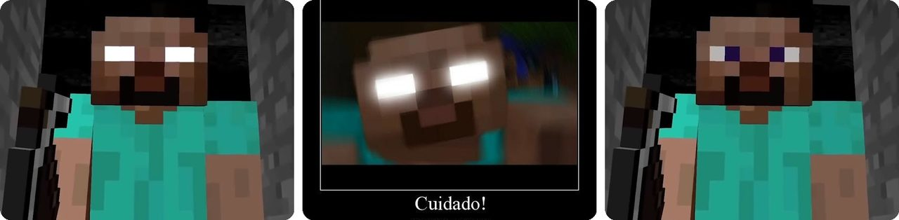
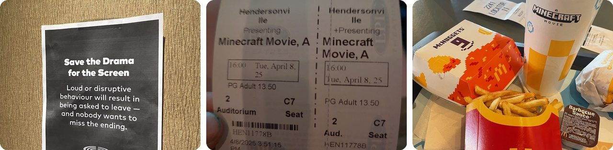

🌍 十大 乐高我的世界套装、生物和人仔
2026年11月21日
1. 🗳️ 乐高我的世界是粉丝两天就投票“投”出来的
 做《我的世界》（Minecraft）的公司 Mojang，把这个点子发到了乐高的粉丝创意网站上。在那里，一个项目要先拿到 1 万名支持者，乐高才会认真考虑。结果《我的世界》的粉丝大约两天就做到了。
做《我的世界》（Minecraft）的公司 Mojang，把这个点子发到了乐高的粉丝创意网站上。在那里，一个项目要先拿到 1 万名支持者，乐高才会认真考虑。结果《我的世界》的粉丝大约两天就做到了。
第一套“微型世界”（Micro World）在 2012 年 6 月上市。它是四小块《我的世界》的地形，可以按任意顺序拼在一起，有几块还能掀开，露出藏着矿石和地下河的洞穴。里面的小角色叫“微型生物”（micromobs）。
到 2012 年 12 月，它已经卖断货了。后来又出了三套微型世界：2013 年的下界和村庄，还有 2014 年的末地。
说白了，是粉丝把一个玩具投票送上了货架。
2. 🧱 乐高我的世界套装故意用最普通的积木
 从 2014 年开始，套装改成了人仔的大小。为了跟游戏一样方方正正，它们大多用简单、普通的积木拼成。特别做的模具零件，只留给角色的脑袋、工具和少数身体部位。
从 2014 年开始，套装改成了人仔的大小。为了跟游戏一样方方正正，它们大多用简单、普通的积木拼成。特别做的模具零件，只留给角色的脑袋、工具和少数身体部位。
每个场景都搭在垫高的底座上，所以你可以把相邻的套装推到一起，拼成一个更大的世界。乐高到现在已经在这个系列里推出了大约 177 套 套装和小袋装赠品。
可以把每一盒都想成：你不断往上加的世界里，又多了一块。
3. 💥 苦力怕一开始其实是一只做坏了的猪
 2009 年 8 月 20 日，《我的世界》的创作者马库斯·“Notch”·佩尔松正在做猪。他不小心把猪的长和高弄反了，结果做出了一个又高又瘦、四条腿的怪东西。
2009 年 8 月 20 日，《我的世界》的创作者马库斯·“Notch”·佩尔松正在做猪。他不小心把猪的长和高弄反了，结果做出了一个又高又瘦、四条腿的怪东西。
他没有删掉，而是说：“留着当个吓人的怪物吧。”他用游戏里树叶的贴图把它涂成绿色，还让它会攻击人。现在它会悄悄靠近，发出嘶嘶声，然后 爆炸，把你盖的东西炸出一个大洞。
在乐高里，苦力怕的身体和腿大部分是一整块模具零件。《我的世界》的首席设计师还说过，一个会炸掉玩家建筑的怪物，要是放到今天，大概不会被加进游戏。
换句话说，一个手误变成了游戏里最有名的怪物。
4. 🐉 末影龙就在第一批人仔大小的乐高我的世界套装里
 2014 年底，乐高推出了第一批六套人仔大小的《我的世界》套装，“末影龙”就是其中之一。
2014 年底，乐高推出了第一批六套人仔大小的《我的世界》套装，“末影龙”就是其中之一。
在游戏里，末影龙守着末地的主岛。末地是一片漂浮在黑漆漆、深不见底的虚空上的岛屿。打败它以后，屏幕会放出制作名单，接着是 《终末之诗》：爱尔兰作家朱利安·高夫写的大约 1500 个词，滚完要差不多九分钟。
这差不多相当于一篇五页长的作文。
所以打败最终大魔王的奖励，是一个睡前故事。
5. 🧑 史蒂夫这个名字原本是个玩笑
 Notch 给默认玩家起名“史蒂夫”是开玩笑的，因为这个名字听起来太普通了。玩家们就这么叫开了，后来它成了官方名字。这个角色本来就没打算分男孩女孩，2014 年 8 月，亚历克斯也作为第二个默认角色加入。
Notch 给默认玩家起名“史蒂夫”是开玩笑的，因为这个名字听起来太普通了。玩家们就这么叫开了，后来它成了官方名字。这个角色本来就没打算分男孩女孩，2014 年 8 月，亚历克斯也作为第二个默认角色加入。
后来史蒂夫红得不得了。2020 年他加入了格斗游戏《任天堂明星大乱斗 特别版》，结果强得离谱，到 2023 年 3 月已经被好几个比赛禁用了。2025 年，杰克·布莱克在《我的世界大电影》里演了他。
一个临时起的名字，最后安在了一位超级明星身上。
6. 🗿 乐高我的世界大人偶一共只出了五款
 2019 年，乐高推出了“大人偶”（Bigfigs）：用积木拼成的大号《我的世界》角色，比人仔大得多。每一款都带一个小跟班生物。
2019 年，乐高推出了“大人偶”（Bigfigs）：用积木拼成的大号《我的世界》角色，比人仔大得多。每一款都带一个小跟班生物。
总共只有 五款：史蒂夫和鹦鹉、亚历克斯和鸡、骷髅和岩浆怪、苦力怕和豹猫，还有猪和小僵尸。第三波大概不会出了。
整套收藏，一只手就能数完。
7. 🦊 乐高我的世界的狐狸直到 2026 年才有了自己的脑袋
 很多年来，乐高拼《我的世界》狐狸时用的都是 猫的脑袋 零件。粉丝们发现了，很不开心。乐高设计经理乔·凯德说，团队看到了大家的失望。
很多年来，乐高拼《我的世界》狐狸时用的都是 猫的脑袋 零件。粉丝们发现了，很不开心。乐高设计经理乔·凯德说，团队看到了大家的失望。
于是在 2025 年伦敦的 EGX 游戏展上，乐高公布了八套新套装，里面有全新的狐狸脑袋零件。它们在 2026 年 1 月 1 日上市，出现在“史蒂夫的针叶林冒险”和“养鸡场”等套装里。
说白了，这只狐狸穿了好几年的猫咪套装。
8. 👻 Herobrine 是一个从来没存在过的著名反派

2010 年，有人在网上匿名发了一个故事。他说在自己的单人世界里，看到了另一个史蒂夫，长着 纯白色的眼睛，在雾里盯着他，然后消失了。他还说，后来他发的关于这件事的帖子总是被删掉。这件事不是真的，可还是传开了。主播们做了自己的版本，粉丝们写故事、做模组把他加进游戏，他甚至登上了吉尼斯世界纪录评选的最佳电子游戏反派榜。
他就是一个篝火旁讲的鬼故事，最后进了纪录书。
9. 🐔 一句“小鸡骑士！”让电影院乱成一团

在《我的世界大电影》（2025）里，当一个《我的世界》生物出现时，史蒂夫大喊：“小鸡骑士！”（Chicken jockey）美国和英国的青少年观众一到这一刻就欢呼、蹦跳、跳舞、扔爆米花。后来越闹越疯。在犹他州普罗沃的一家影院，有观众举起了一只 活鸡，结果被请了出去。有些影院还贴出了关于大声喧哗的警告。
接着华纳兄弟干脆顺势而为：2025 年 5 月 2 日推出了“街区派对版”，邀请粉丝跟着一起唱、一起喊。这部电影在全球赚了大约 9.61 亿美元。
它把安静的电影院变成了足球场。
10. 🦔 粉丝想取消《我的世界》的生物投票，结果犰狳还是赢了
 《我的世界》的“生物投票”让玩家从三种新生物里选一种加进游戏。2023 年的选项是螃蟹、企鹅和犰狳。
《我的世界》的“生物投票”让玩家从三种新生物里选一种加进游戏。2023 年的选项是螃蟹、企鹅和犰狳。
很多玩家想三个都要。一份要求 Mojang 取消投票的请愿书，一周内拿到了大约 44.5 万个签名，差不多相当于美国迈阿密市的人口。粉丝们甚至还做了搞笑的“革命”海报。
投票照常进行，最后犰狳赢了。2024 年 9 月，Mojang 正式取消了生物投票。
可以把它想成：一场班级选举，大家却要求三个候选人全都当选。
趣闻
苦力怕那声有名的嘶嘶声，本来没打算留下。《我的世界》的作曲家丹尼尔·罗森菲尔德（艺名 C418）和 Notch 一起用火柴声做了个临时音效，结果“效果好得好笑”。他做别的声音也是这样一次次试出来的：真的在草地上走路录下来的声音不对劲，他就改成轻轻摸一盘旧录像带；蜘蛛的尖叫声则是把消防水管的录音调高了音调。音效师们的口袋里，还藏着一大堆这样的小把戏。
图片来源（Wikimedia Commons）
- #1: Minecraft Lego (flickr) by JeepersMedia, CC BY 2.0
- #1: Minecraft (flickr) by nefasth, CC BY-SA 2.0
- #1: Minecraft Lego (flickr) by JeepersMedia, CC BY 2.0
- #2: LEGO Minecraft set 21141 The zombie cave (flickr) by Alex does LEGO, CC0
- #2: Minecraft Lego (flickr) by JeepersMedia, CC BY 2.0
- #2: Diorama Minecraft en Lego (Colmar).jpg by Gzen92, CC BY-SA 4.0
- #3: lego creeper (flickr) by paulhome, CC BY 2.0
- #3: Minecraft Creeper Piñata (flickr) by taylor.a, CC BY 2.0
- #3: #minecraft creeper cakes for my boy's class. These are probably the worst looking cakes I've ever made, but they took so much work! (flickr) by mommyknows { Kim Becker }, CC BY 2.0
- #4: Minecraft Lego (flickr) by JeepersMedia, CC BY 2.0
- #4: Minecraft Lego (flickr) by JeepersMedia, CC BY 2.0
- #4: Zombie and Ender Dragon boys! (flickr) by mole555, CC BY 2.0
- #5: Minecraft Lego head (6790028921).jpg by Dennis Bohman from Boxholm, Sweden, CC BY 2.0
- #5: Minecraft Steve, Sandy Carnival, Sandy, Bedfordshire (flickr) by orangeaurochs, CC BY 2.0
- #5: Minecraft Steve (flickr) by colecamp, CC BY 2.0
- #6: Minecraft-Bigfigs-2019P1070601 (flickr) by Brickset, CC BY 2.0
- #6: Minecraft-Bigfigs-2019P1070469 (flickr) by Brickset, CC BY 2.0
- #6: Minecraft-Bigfigs-2019P1070488 (flickr) by Brickset, CC BY 2.0
- #7: Vulpes vulpes · Volgograd, RU by (c) Алина Урусова, some rights reserved (CC BY), CC BY
- #7: Vulpes vulpes necator · Deschutes County, US-OR, US by (c) David Willingham, some rights reserved (CC BY), CC BY
- #7: Vulpes lagopus · thule greenland by (c) Drew Avery, some rights reserved (CC BY), CC BY
- #8: Herobrine (Minecraft).png by OxyLight, CC BY 4.0
- #8: herobrine (flickr) by vegetta777 gaymer pro, CC BY-SA 2.0
- #8: Steve? 2.png by Xbox México, CC BY 3.0
- #9: Minecraft movie disruptive behavior warning.jpg by Chicken4War, CC BY-SA 4.0
- #9: Movie Ticket for A Minecraft Movie (2025).jpg by PublicDomainFan08, CC0
- #9: A Minecraft Movie McDonald's meal.jpg by YosemiteYamper, CC BY-SA 4.0
- #10: Nine-banded armadillo (13594).jpg by Rhododendrites, CC BY-SA 4.0
- #10: Dasypus novemcinctus · Recanto de Itaipuaçu, Maricá - RJ, Brasil by (c) Pedro Silva, some rights reserved (CC BY), CC BY
- #10: Six-banded armadillo (Euphractus sexcinctus).JPG by Charles J. Sharp, CC BY-SA 4.0
.jpg){kind=link}
.jpg){kind=link}
.png){kind=link}


.jpg){kind=link}

.jpg){kind=link}
.JPG){kind=link}